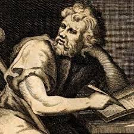
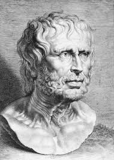

Zeno of Citium was born around 334 BCE in the city of Citium, located on the island of Cyprus. Initially a merchant, Zeno turned to philosophy after surviving a shipwreck that brought him to Athens around 300 BCE. There, he became deeply inspired by Socratic teachings he encountered in a bookstore. Seeking further knowledge, Zeno studied under various philosophical schools before establishing his own at the Stoa Poikile (Painted Porch) in Athens, which led to the naming of the Stoic school of thought. Zeno's teachings emphasized the importance of virtue and wisdom as the paths to a good life, introducing the core concepts of Stoicism. While none of his writings have survived, his ideas were preserved and expanded upon by his students, laying the groundwork for future Stoic philosophers.

Epictetus was born around 50 CE in Hierapolis, Phrygia (modern-day Turkey) and spent his early years as a slave in Rome, serving Epaphroditus, a secretary to Emperor Nero. Despite his status, Epictetus was allowed to study philosophy under Musonius Rufus, a leading Stoic teacher. After gaining his freedom, Epictetus moved to Nicopolis, Greece, where he established a philosophical school. His teachings focused on the dichotomy of control, emphasizing that individuals should concern themselves only with what they can control and accept what they cannot. Epictetus's insights on personal responsibility and inner freedom were recorded by his student Arrian in the "Discourses" and the "Enchiridion" (Handbook). These works remain essential readings in Stoic philosophy, influencing both ancient and modern thought on resilience and ethics.

Lucius Annaeus Seneca, commonly known as Seneca the Younger, was born around 4 BCE in Corduba (modern-day Córdoba, Spain) into a prominent and wealthy family. He received a comprehensive education in Rome, excelling in rhetoric and philosophy. Seneca became a distinguished statesman, philosopher, and playwright, serving as an advisor to Emperor Nero. However, his political career ended tragically when he was forced to commit suicide after being implicated in the Pisonian conspiracy against Nero. Despite his tumultuous life, Seneca's philosophical works, including his essays and letters, provide practical advice on ethics and daily living. His writings emphasize the importance of rationality, virtue, and emotional control, and continue to be highly regarded for their practical wisdom and insight into human nature.

Marcus Aurelius was born in 121 CE in Rome into a noble family. He was adopted by Emperor Antoninus Pius and groomed for leadership, eventually becoming Roman Emperor in 161 CE. Despite his powerful position, Marcus Aurelius is best known for his Stoic philosophical writings, particularly "Meditations," a collection of personal reflections and maxims written during his military campaigns. His work emphasizes the transient nature of life, the importance of duty, and the practice of virtue. "Meditations" offers a unique insight into the application of Stoic principles by a ruler striving to maintain personal integrity and rationality amidst the challenges of leading a vast empire. Marcus Aurelius's thoughts on resilience, duty, and ethical leadership have made him one of the most revered figures in Stoic philosophy.